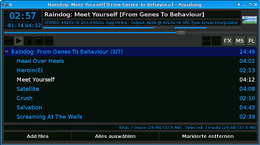
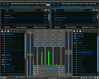
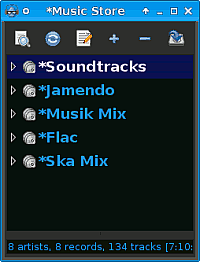
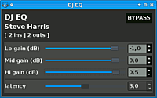

Aqualung
Dieser Artikel wurde für die folgenden Ubuntu-Versionen getestet:
Ubuntu 14.04 Trusty Tahr
Zum Verständnis dieses Artikels sind folgende Seiten hilfreich:
JACK Audio Connection Kit bedienen, optional
Einen Editor öffnen, optional
Rechte für Dateien und Ordner ändern, optional

| Aqualung | ||
Homepage of Aqualung 
 | ||
| Anwendungsbereich: | Audio | |
| Sprache: |  und weitere und weitere | |
| Autor: | Tom Szilagyi und weitere | |
| Erste Veröffentlichung: | 2004 | |
| Lizenz: | GPL | |
| Oberfläche: | GTK+ 2 | |
| Programmiersprache: | C | |
| Installation: | Paketquellen oder kompilieren | |
Aqualung ist ein AudioPlayer für Gapless Playback, daher besonders gut für die Wiedergabe von Live-Aufnahmen geeignet, zumal das Programm kleine und große Dateien gleichermaßen gut verarbeitet. Playlisten können vor dem Abspielen gescannt werden, um eine mittlere Lautstärke zu berechnen, auf die die Lautstärke jedes einzelnen Liedes während des Abspielens angepasst wird.
Musik-Sammlungen können in so genannten "Music Stores" (Datenbanken auf XML-Basis) übersichtlich verwaltet werden. Metadaten können dabei aus den ID-Tags, Verzeichnis-Strukturen und von Online-Datenbanken (CDDB ) abgefragt werden. Zusätzlich werden MP3-Player unterstützt, die vom iriver-Treiber unterstützt werden.
Über den Patch Bauer können LADSPA-Plugins benutzt werden und auch ein Betrieb in mehreren Instanzen als JACK-Clients ist möglich, womit das Programm für den versierten Tonstudio-Anwender interessant ist.
Die Oberfläche ist über Skin-Themes veränderbar; für die Bildschirmfotos in diesem Artikel wurde das Dark-Skin in Verbindung mit Xfce und dem Ubuntu Studio-Design benutzt. Das Programm wurde bei Lubuntu bis Version 10.10 als Standard-Audioplayer verwendet.
Installation¶
Folgendes Paket muss installiert [1] werden:
aqualung (universe)
 mit apturl
mit apturl
Paketliste zum Kopieren:
sudo apt-get install aqualung
sudo aptitude install aqualung
Um Unterstützung für Codecs zu aktivieren, die nicht über die main- und universe-Sektionen der Paketquellen verfügbar sind, muss das Programm neu kompiliert werden. Hilfestellung dazu bietet der Artikel Aqualung/Kompilieren.
Bedienung¶
Im Folgenden werden grundlegende Funktionen und Besonderheiten des Programms erklärt. Eine ausführliche Programm-Anleitung wird unter /usr/share/doc/aqualung/manual.pdf mitgeliefert.
Start¶
Aqualung kann bei Ubuntu-Varianten mit einem Anwendungsmenü über den Eintrag "Multimedia -> Aqualung" oder "Unterhaltungsmedien -> Aqualung" gestartet werden [2]. Aqualung wählt automatisch einen Treiber und bevorzugt hierbei JACK vor ALSA und dieses wiederum vor OSS.
Mehrere Instanzen¶
Um mehrere Instanzen zu starten, muss die jeweilige Instanz im Terminal gestartet und über einen Parameter benannt werden:
aqualung -c Aqua-Player-1
Experten-Info:
Erläuterungen zu weiteren Startparametern, unter anderem zur Echtzeit-Prozess-Steuerung, finden sich in der Manpage.
Über Mischpult¶
 Durch die Fähigkeit, mehrfach starten zu können und jede Instanz mit beliebigen JACK-Anschlüssen zu verbinden, bietet Aqualung eine Menge Anwendungsmöglichkeiten im (semi-)professionellen Bereich, angefangen beim DJ.
Folgendes Skript ist (ausgehend von einer funktionierenden JACK-Konfiguration [3]) ein Beispiel, um den Soundserver JACK, einen Equilizer (hier JackEQ) und zwei Instanzen von Aqualung zu starten.
Dabei werden die beiden Instanzen als "Aqua-Links" und "Aqua-Rechts" benannt und mit dem ersten und zweiten Stereo-Eingang des Equilizers verbunden. Dessen Master-Ausgang wird wiederum mit den JACK-Anschlüssen für die Ausgabe der Soundkarte verbunden. Am JackEQ kann so zwischen beiden Player komfortabel gewechselt bzw. gemixt werden (Crossfade).
Durch Erweiterung des Skriptes oder durch Verbinden über Qjackctl können natürlich noch weitere JACK-Clients an das Mischpult gebunden werden, beispielsweise ein Programm (wie mhWaveEdit) zur Aufnahme an den Monitor-Ausgang oder der Mikrofon-Eingang der Soundkarte (i.d.R. alsa_pcm:capture_1) an den dritten Eingangskanal des Mischpult JackEQ.
#!/bin/bash `sed 1q $HOME/.jackdrc` > /dev/null 2>&1 & jackeq > /dev/null 2>&1 & aqualung -c Aqua-Links --output jack --auto=jackEQ:c.1-in-L,jackEQ:c.1-in-R > /dev/null 2>&1 & aqualung -c Aqua-Rechts --output jack --auto=jackEQ:c.2-in-L,jackEQ:c.2-in-R > /dev/null 2>&1 & jack_connect jackEQ:a.master-L alsa_pcm:playback_1 > /dev/null 2>&1 & jack_connect jackEQ:a.master-R alsa_pcm:playback_2 > /dev/null 2>&1 & exit 0
Das Skript wird in diesem Beispiel als aquadual.sh im Homeverzeichnis erstellt [4] und anschließend mit folgenden Befehlen unter /usr/local/bin allen Nutzern zur Verfügung gestellt [5]:
sudo cp ~/aquadual.sh /usr/local/bin/aquadual sudo chmod a+x /usr/local/bin/aquadual
Diese Zusammenstellung der virtuellen Geräte kann natürlich auch über die grafische Oberfläche des QjackCtl vorgenommen werden.
PL - Playlist¶
Die Playliste kann über die Schaltflächen, das Kontext-Menü der rechten Maustaste oder durch "drag and drop" aus dem Music Store befüllt werden. Die Playlisten mehrerer Instanzen können auch aus dem Music Store Fenster der jeweils anderen Instanz befüllt werden.
MS - Music Store¶
 Music Stores sind einzelne, XML-basierte Datenbanken, in denen Metadaten zu Musik-Sammlungen gespeichert werden. Die Anordnung in einzelnen Stores bietet den Vorteil, beispielsweise lokale und entfernte Sammlungen (auf NFS-Freigaben) getrennt zu verwalten.
Ein neuer Music Store wird über einen Rechts-Klick  in das leere Music Store Fenster und die Wahl von "Create empty store" im Kontext-Menü angelegt. Im erscheinenden Dialog können der Speicherort (Schreibrechte müssen vorhanden sein, das Homeverzeichnis bietet daher sich an) und Name der XML-Datei und der Datenbank, sowie ein Kommentar angegeben werden.
in das leere Music Store Fenster und die Wahl von "Create empty store" im Kontext-Menü angelegt. Im erscheinenden Dialog können der Speicherort (Schreibrechte müssen vorhanden sein, das Homeverzeichnis bietet daher sich an) und Name der XML-Datei und der Datenbank, sowie ein Kommentar angegeben werden.
Anschließend kann man wiederum mit einem Rechts-Klick auf den zuvor erstellten Store im Kontextmenü den Punkt "Build / Update store from filesystem..." wählen, um die Datenbank mit einer Sammlung zu befüllen. Die Metadaten der Stücke können dabei an Verzeichnis-Strukturen und -Namen, anhand von ID-Tags und über CDDB-Abfragen erkannt werden. Eine einheitliche Struktur unterhalb eines gemeinsamen Wurzelverzeichnis ist dabei für die Dateien eines Music Stores unabdingbar.
Die Einstellungen zum Einlesen der Daten sind sehr umfangreich und man muss einige Zeit investieren, um eine größere Musik-Sammlung in Music Stores aufzuteilen und einzulesen. Dann erhält man jedoch eine übersichtliche und gut durchsuchbare Sammlung, in der selten Metadaten (Informationen zu Titel, Artist, Cover etc.) fehlen.
FX - Effekte¶
 Über den Schalter "FX" gelangt man zum LADSPA Patch Bauer, über den man Zugriff auf alle installierten LADSPA-Plugins im System hat. Über die Schaltflächen "hinzufügen" und "Entfernen" können die Effekt-Geräte in Reihe geschaltet werden. Über die Schaltfläche "Configure" können die einzelnen Geräte geöffnet und eingestellt werden. Jedes Gerät verfügt wiederum über eine "Bypass"-Schaltfläche, um das Gerät zu umgehen.
Eine typische Anwendung ist der Steve Harris DJ-EQ (enthalten im Paket swh-plugins (universe) mit der Plugin-ID 1901), ein schlichter Drei-Band-Equilizer.
Konfiguration¶
Die meisten Einstellungen können über den Einstellungs-Dialog im Programm vorgenommen werden. Dieser kann über das Kontextmenü erreicht werden, das durch einen Klick mit der rechten Maustaste im Programmfenster aufgerufen wird.
Konfigurations-Dateien¶
Folgende Tabelle gibt Aufschluss, in welcher Konfigurations-Datei welche Einstellungen gespeichert werden.
| Datei | Einstellungen |
| ~/.aqualung | Benutzereinstellungen |
| ~/.aqualung/config.xml | GUI-Einstellungen (Skin, Fenster-Größe und -Postition etc.) |
| ~/.aqualung/plugin.xml | Einstellungen aktivierter Plugins |
| ~/.aqualung/playlist.xml | Automatisch gespeicherte Playlist. |
| /usr/share/aqualung/skin | Systemweites Skin-Verzeichnis. |
| ~/.aqualung/skin | Vom Benutzer gespeicherte Skins. |
Links¶
Aqualung/Kompilieren - Unterartikel zum Übersetzen aus dem Quelltext
AudioPlayer
 Übersichtsartikel
Übersichtsartikel
- Erstellt mit Inyoka
-
 2004 – 2017 ubuntuusers.de • Einige Rechte vorbehalten
2004 – 2017 ubuntuusers.de • Einige Rechte vorbehalten
Lizenz • Kontakt • Datenschutz • Impressum • Serverstatus -
Serverhousing gespendet von